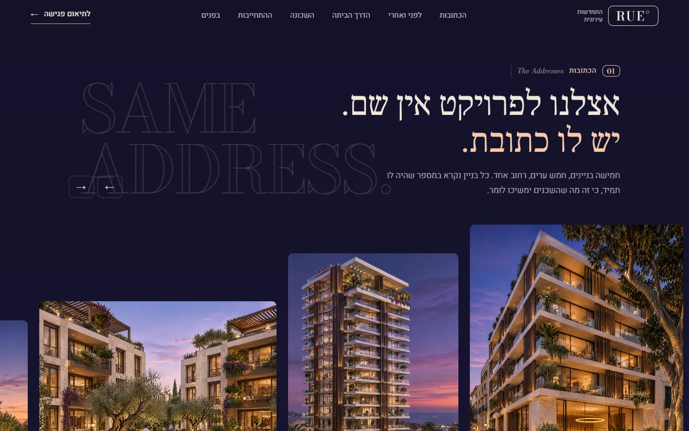
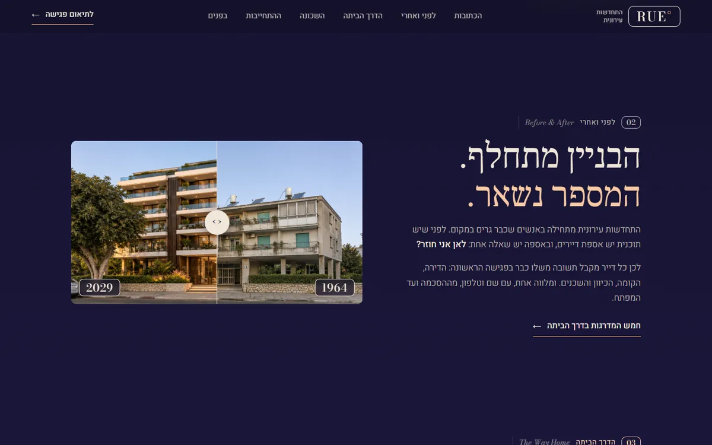
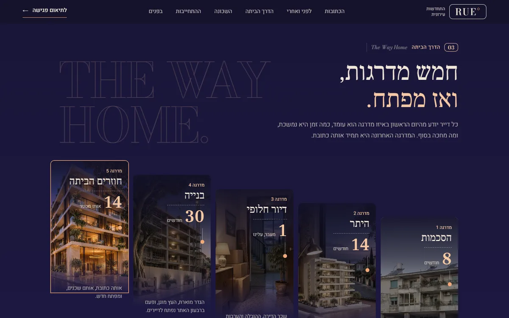
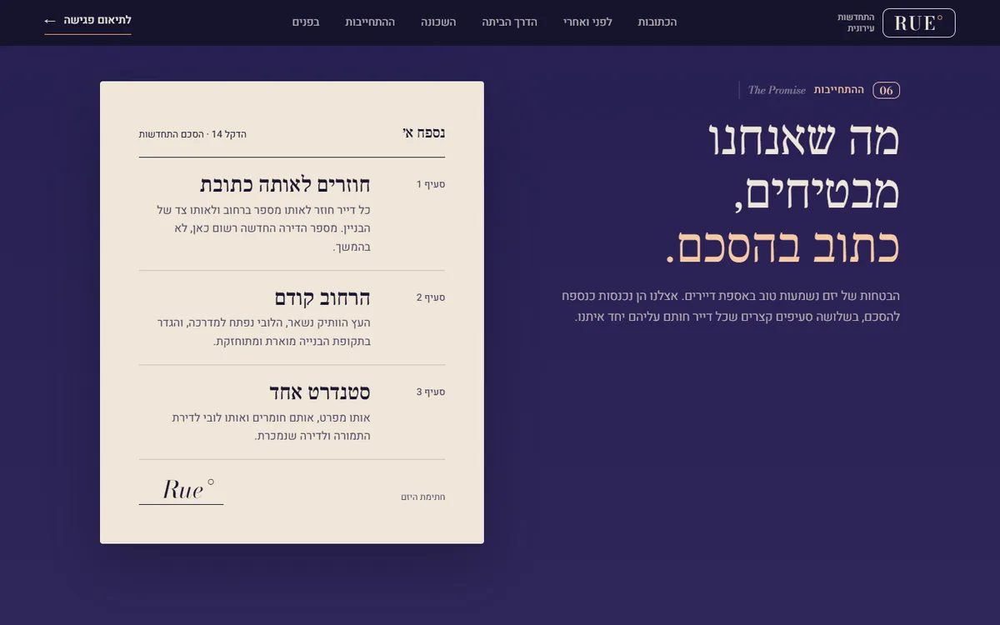

01
לפרויקט אין שם. יש לו כתובת.
ההחלטה: שם שיווקי אף שכן לא יגיד. את מספר הבית כולם כבר אומרים.
כל בניין נקרא במספר שהיה לו תמיד. שלט המספר הוא גם הלוגו, גם הכפתור וגם מספר הסקשן.
אתר לחברה או לפרויקט, שעונה לדיירים, לרוכשים ולעירייה על מה שכל אחד מהם צריך לדעת. עוד לפני הפגישה הראשונה.
RUE° · אתר תדמית לחברת יזמות. חברה בדויה, אתר אמיתי.
לאתר של פרויקט נכנסים שלושה אנשים שונים, וכל אחד מחפש תשובה אחרת. אתר שעונה רק לאחד מהם משאיר את השניים האחרים בחוץ.
"לאן אני חוזר, מתי, ומי מלווה אותי?"
הם צריכים לחתום. האתר נותן להם תשובה אישית ולוח זמנים, לא הדמיה.
"מה אני קונה כאן, חוץ מדירה?"
מפרט, רחוב ושכנים. מה שמבדיל את הפרויקט מהמגדל שממול.
"מה הרחוב מקבל מזה?"
העץ שנשאר, קומת הקרקע, והגדר בתקופת הבנייה. כתוב ומחייב.
RUE° היא חברת יזמות בדויה שבניתי בסטודיו, כדי להראות אתר כזה עד הסוף. עוברים עליו מסך אחרי מסך.

ההחלטה: שם שיווקי אף שכן לא יגיד. את מספר הבית כולם כבר אומרים.
כל בניין נקרא במספר שהיה לו תמיד. שלט המספר הוא גם הלוגו, גם הכפתור וגם מספר הסקשן.

ההחלטה: לפני ואחרי מאותה מצלמה, עם אותו עץ בכניסה.
הדייר גורר את הקו בעצמו ורואה את הבית שלו משתנה. הוא לא צריך לדמיין, והוא לא מקבל הדמיה של בניין אחר.

ההחלטה: התהליך כולו במסך אחד, עם משך זמן לכל שלב.
הסכמות, היתר, דיור חלופי, בנייה, חוזרים הביתה. כל דייר יודע באיזו מדרגה הוא עומד ומה מחכה בסוף.

ההחלטה: ההבטחות מופיעות כנספח חתום, לא כסיסמאות.
שלושה סעיפים קצרים: חוזרים לאותה כתובת, הרחוב קודם, סטנדרט אחד לדירת התמורה ולדירה שנמכרת.
לאתר החי ←הדוגמה היא פרויקט קונספט של הסטודיו: חברה בדויה, עבודה אמיתית.
שלושים חודשי בנייה הם שלושים חודשים שבהם השכונה פוגשת את הפרויקט דרך הגידור. כאן הוא נושא את אותו שלט מספר ואת אותם דיירים, מצוירים בקו.
האתר הוא מה שסוגרים עכשיו. כל השאר לפי בחירה, ומסוכם בנפרד.
מי הדיירים, מי הרוכשים, מה כבר הובטח ומה עוד פתוח.
מה כל קהל צריך לשמוע, ובאיזה סדר. לפני שמעצבים.
שפה אחת לחברה או לפרויקט, מותאמת למחשב ולנייד.
טפסים, וואטסאפ ובדיקות. מחיר סגור בהצעה כתובה, לפני שמתחילים.

אתר של פרויקט הוא לא גלריית הדמיות.
אני מגיעה מאסטרטגיה, מיתוג ושיווק דיגיטלי, ומשלבת אותם עם עיצוב ופיתוח. כל החלטה באתר משרתת מטרה: מה רואים קודם, מה מבינים, ואיך מתקדמים משם.
עובדים מולי ישירות, מהשיחה הראשונה ועד העלייה לאוויר.
נתחיל בשיחה קצרה על החברה או על הפרויקט: מי הקהל, מה כבר קיים, ומה האתר צריך לעשות.
יש לכם אתר היום? הדביקו את הקישור ואעבור עליו לפני השיחה.